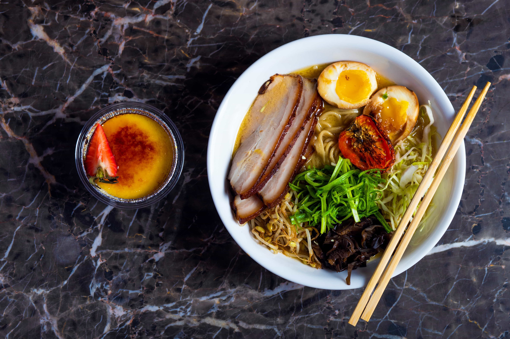

Ramen
Once you have fallen in love with the comfort food, ramen, then it it time to learn to make it. Learn the tips to the best broth and all the toppings, too.
What you need:
| Amount | Ingredients |
|---|---|
| 2½ lb | ramen noodles, cooked according to package directions |
| 5 oz | pork fat |
| 4 lb | pig hocks and/or trotters, ask the butcher to cut the smallest piece possible |
| 2 lb | chicken backs, cut into small pieces |
| 1 lb | chicken feet |
| 1 | large onion, peeled and slit around |
| 1 | whole garlic |
| 2 inches | ginger, sliced |
| 1 | leek, sliced |
| 15 | green onions, white parts only, cut them in half across |
| 5 – 8 | slices of white oyster mushrooms |
| 1 (8-qt) | heavy stock pot or an equivalent |
| 1½ lb | slab boneless pork belly, rolled and secured with strings |
| 1 cup | water |
| ½ cup | soy sauce |
| 1 cup | white grape juice |
| 1 teaspoon | lemon juice |
| 2 tablespoons | sugar |
| 5 | green onions, halved |
| 1 | whole garlic, bruised |
| 2 inches | ginger, sliced |
| 2 | whole shallots, halved |
| ½ teaspoon | whole black peppercorn |
| Sauce from chashu | |
| 3 | Eggs |
| Soy Sauce |
Steps
- Place the chicken, pork bones and marrow in a stock pot. Add enough water to fully cover them. Cover with a lid. Over high heat, bring the water to a boil. Once boiled, drain the bones and wash any dark marrow or coagulated blood off from the pork with cold water.
- Rinse the pot, put the bones back in along with the rest of the ingredients for the broth. Add water to barely just cover the ingredients (things will shrink overtime so no worries there). Cover with a lid. Over high heat, bring the water to a boil. One boiled, simmer covered on low for 6-12 hours on the stove or 12-18 hours in a slow cooker.
- Check the first 10-15 minutes after turning down the heat to make sure it’s just barely simmering.
- The last 30 minutes to 1 hour before it’s done, place the 5 oz pork fat on a sieve or strainer, put it in the broth, cover the pot and let the fat cook. Drain and finely mince the pork fat.
- Skim half, all or none of the fat (easiest when after refrigerated). It’s your choice.li>
- Preheat the oven to 250 F. In a saucepan, place the pork belly. Add water to fully cover the pork and put the water to boil. Once boiled, drain and remove the scum.
- In the same saucepan, place the pork back in along with the remaining ingredients for chashu. Cover with a lid. Over high heat, put the sauce to boil. Once boiled, transfer the pot to the oven and cook for 5 hours.
- At the 2 hour mark, shake the pan to ensure sauce coats the entire pork evenly. Thereafter, shake every 1 hour until the 5 hour mark. Insert a skewer into the pork. If there’s no resistance, it’s ready. If you like it even softer (and have the time), cook the pork belly longer
- Let it cool. Once completely cool, chill the pork in the refrigerator (along with the eggs). This is to allow more flavor to be absorbed and makes it easier to slice as well.
- When you want to consume, cut the strings, slice the pork and carefully place on a sieve or strainer. Briefly reheat the chashu in hot ramen soup.
- In a saucepan, put enough water (to cover all the eggs) to boil. Once boiled, turn the heat to medium, gently place the eggs in the water and let it simmer on bare simmer for exactly 6 minutes.
- Drain the water and carefully peel the eggs under cold water. The eggs are very soft and delicate.
- Place the peeled eggs in the cooled chashu sauce. Soak paper towel with chashu sauce and put it over the eggs to cover them (this is to ensure the top of eggs are marinated too). Marinate for 4-12 hours in the refrigerator (along with the pork belly).
- When you want to consume, carefully slice the eggs in half (yolk is very soft and may be slightly runny). Place eggs on a sieve or strainer and reheat in hot ramen soup (do not over heat as it will harden the eggs).
- Bring the broth to boil and add your choice of seasoning. Start with a little and add as you go. You can always increase seasoning but you can’t undo over seasoned broth.
- Arrange the noodles in a bowl and place the chashu, egg, some minced pork fat, your favorite toppings and garnish. Serve immediately.